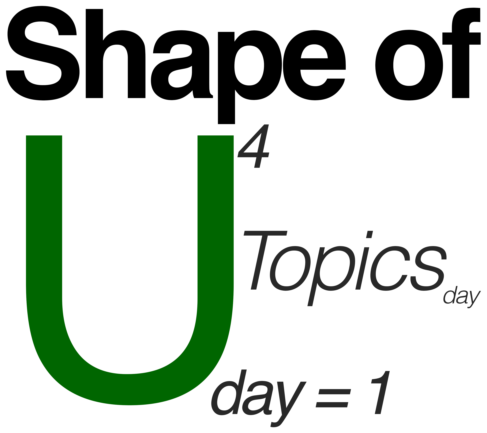

\(\text{Topics} \in \{\,\text{Set theory},\; \text{Probability},\; \text{Integrals},\; \text{Limits},\; \text{Differentiation},\; \text{Data structures}\,\}\)
MATH AND PROGRAMMING CAMP · DAY 5, SESSION 1 · LINEAR ALGEBRA
2026-08-21
Four days in, we can already read the objects that matter:
Somewhere in the second or third week of your first methods course, this appears with no ceremony:
\[\hat\beta = (X'X)^{-1}X'y\]
Three reactions are possible:
To be clear about what today is not: we are not deriving this, and you are not expected to have seen it before.
Today buys you something smaller and more useful on the day: when that slide goes up, you can read it instead of bracing.
A column of numbers you have already been staring at all week.
df$polyarchy is \(\mathbf{x}\).Before any operation at all, the rule that governs every one of them.
Two operations on vectors. Both are done entry by entry, and both obey the rules from the last slide.
Addition — add matching entries. Conformable only when the shapes are identical.
\[\begin{bmatrix} 0.91 \\ 0.56 \\ 0.28 \end{bmatrix} + \begin{bmatrix} 0.03 \\ 0.10 \\ 0.02 \end{bmatrix} = \begin{bmatrix} 0.94 \\ 0.66 \\ 0.30 \end{bmatrix}\]
\((n\times1) + (n\times1) = (n\times1)\)
Scalar multiplication — multiply every entry by one number. Always conformable; shape never changes.
\[2\begin{bmatrix} 0.91 \\ 0.56 \\ 0.28 \end{bmatrix} = \begin{bmatrix} 1.82 \\ 1.12 \\ 0.56 \end{bmatrix}\]
\((1\times1)\cdot(n\times1) = (n\times1)\)
One vector is worth naming: \(\mathbf{1}\), the \(n\times1\) column of all ones. Scale it and you get a column of identical numbers — \(\bar x\,\mathbf{1}\) is \(\bar x\) repeated \(n\) times. That is the standard move for turning a lone number into something you’re allowed to add to or subtract from a column.
One country at a time: \(\tilde x_i = x_i - \bar x\). As vectors, using the \(\mathbf{1}\) from the last slide: \(\;\tilde{\mathbf{x}} = \mathbf{x} - \bar{x}\,\mathbf{1}\).
The \(\mathbf{1}\) is there to make the shapes match — you can’t subtract a lone number from a column, so you stretch it into one.
x - mean(x).Let \(\;\mathbf{a} = (2,\;5,\;2)'\;\) and \(\;\mathbf{b} = (4,\;0,\;3)'\;\) — both \(3\times1\) — and let \(\;\mathbf{1} = (1,\;1,\;1)'\).
a + 5 without complaint. What comes back, and what should you have written? \((7,\;10,\;7)'\) — R silently recycled the \(5\). Properly: \(\;\mathbf{a} + 5\,\mathbf{1}\).(e) is the one to remember. Software’s willingness to guess is exactly why you need the rule in your own head.
The one operation that is secretly every formula you learned this week.
Textbooks call this same thing three different things. They are synonyms — the difference is only which feature the name points at.
In this deck: “dot product”, written \(\mathbf{x}'\mathbf{y}\). When you meet the other two names, they are not new operations.
Both traps are settled the same way: name the shapes. One prime in the wrong place is the difference between a number and \(n^2\) of them.
Write \(\tilde{\mathbf{x}} = \mathbf{x} - \bar x\mathbf{1}\) and \(\tilde{\mathbf{y}} = \mathbf{y} - \bar y\mathbf{1}\) for the centered columns, as on the last slide.
A stack of vectors, with dimensions you must keep in view.
The same prime you met on vectors, now for a rectangle: rows become columns.
\[A = \begin{bmatrix} 1 & 2 & 3 \\ 4 & 5 & 6 \end{bmatrix}_{2\times3} \qquad\Longrightarrow\qquad A' = \begin{bmatrix} 1 & 4 \\ 2 & 5 \\ 3 & 6 \end{bmatrix}_{3\times2}\]
Now we can build the object this hour keeps pointing at. \(X\) is \(n\times k\), so \(X'\) is \(k\times n\):
\[X'X \;=\; (k\times n)(n\times k) \;=\; k\times k\]
Small and square however many countries there are — the \(n\) met itself in the middle and cancelled.
The first set of names say nothing but how many rows and columns.
\[\begin{bmatrix}7\end{bmatrix}\]
An ordinary number, wearing brackets. A mean, a variance, or the \(\mathbf{x}'\mathbf{y}\) you computed a moment ago.
\[\begin{bmatrix}1.2\\4.9\\2.1\end{bmatrix}\]
One variable, one entry per country. The outcome \(\mathbf{y}\) is one of these.
\[\begin{bmatrix}1.2 & 4.9 & 2.1\end{bmatrix}\]
One country, one entry per variable. A single row of the data table.
\[\begin{bmatrix}1&2&3\\4&5&6\end{bmatrix}\]
More rows than columns, or fewer. The design matrix \(X\) is one: \(n \times k\), and \(n\) is far bigger.
\[\begin{bmatrix}4&1\\2&3\end{bmatrix}\]
As many rows as columns.
We built one two slides ago:
\[X'X \;=\; (k\times n)(n\times k) \;=\; k\times k\]
Square whatever \(n\) is: \(175\) countries or \(17\), \(X'X\) is still \(k\times k\).
One family, four names so far. None of these is a new kind of object — a scalar is simply a matrix that ran out of rows and columns.
The second set say where the zeros are, or how a matrix relates to its own transpose. Both of these are square.
\[\begin{bmatrix}4&\color{#2b6cb0}{1}\\ \color{#2b6cb0}{1}&3\end{bmatrix}\]
Swap rows for columns and nothing changes. Every variance–covariance matrix is one.
\[\begin{bmatrix}4&0\\0&3\end{bmatrix}\]
Only the top-left-to-bottom-right entries survive. It scales each row by its own number and does nothing else.
\[I = \begin{bmatrix}1&0\\0&1\end{bmatrix}\]
\[IA = AI = A\]
The matrix world’s number \(1\): multiply by it and nothing changes.
The nesting. Every identity is diagonal; every diagonal is square; and symmetric implies square too, since \(A\) and \(A'\) can’t be equal unless the shape survives the swap.
And \(X'X\) is symmetric — using only the two transpose rules: \[(X'X)' = X'(X')' = X'X \;\checkmark\]
A regression model, written for \(k\) predictors at once. Our only job right now is to check the shapes.
What the matrix notation has been compressing all along.
Ordinary algebra, nothing new. Two facts about two unknown numbers:
\[ \begin{aligned} 2x + y &= 5 \\ x - y &= 1 \end{aligned} \]
Pull the system apart into three pieces: the coefficients, the unknowns, and the right-hand sides.
\[ \underbrace{\begin{bmatrix} 2 & 1 \\ 1 & -1 \end{bmatrix}}_{A} \underbrace{\begin{bmatrix} x \\ y \end{bmatrix}}_{\mathbf{x}} = \underbrace{\begin{bmatrix} 5 \\ 1 \end{bmatrix}}_{\mathbf{b}} \qquad\text{that is,}\qquad A\mathbf{x} = \mathbf{b} \]
\(A^{-1}\) is defined by what it does: \(\;A^{-1}A = I\), the identity from the zoo. For the system we just solved,
\[A = \begin{bmatrix} 2 & 1 \\ 1 & -1 \end{bmatrix} \qquad A^{-1} = \frac{1}{3}\begin{bmatrix} 1 & 1 \\ 1 & -2 \end{bmatrix}\]
Check it — multiply them and the identity falls out:
\[A^{-1}A = \frac{1}{3}\begin{bmatrix} 1 & 1 \\ 1 & -2 \end{bmatrix}\begin{bmatrix} 2 & 1 \\ 1 & -1 \end{bmatrix} = \frac{1}{3}\begin{bmatrix} 3 & 0 \\ 0 & 3 \end{bmatrix} = \begin{bmatrix} 1 & 0 \\ 0 & 1 \end{bmatrix} = I \;\checkmark\]
And it solves the system: \(\;\mathbf{x} = A^{-1}\mathbf{b} = \frac{1}{3}\begin{bmatrix} 1 & 1 \\ 1 & -2 \end{bmatrix}\begin{bmatrix} 5 \\ 1 \end{bmatrix} = \frac{1}{3}\begin{bmatrix} 6 \\ 3 \end{bmatrix} = \begin{bmatrix} 2 \\ 1 \end{bmatrix}\) — the same \(x=2\), \(y=1\) we got by elimination.
\[\underset{n\times1}{\mathbf{y}} \;=\; \underset{n\times k}{X}\;\underset{k\times1}{\boldsymbol\beta} \;+\; \underset{n\times1}{\boldsymbol\varepsilon}\]
Four countries, two predictors — so \(n = 4\) and \(k = 3\), because the intercept column counts:
\[ \underbrace{\begin{bmatrix} 1.2 \\ 4.9 \\ 2.1 \\ 1.6 \end{bmatrix}}_{\mathbf{y}\;(4\times1)} = \underbrace{\begin{bmatrix} 1 & 0.91 & 10.9 \\ 1 & 0.56 & 7.3 \\ 1 & 0.28 & 8.1 \\ 1 & 0.14 & 6.5 \end{bmatrix}}_{X\;(4\times3)} \underbrace{\begin{bmatrix} \beta_1 \\ \beta_2 \\ \beta_3 \end{bmatrix}}_{\boldsymbol\beta\;(3\times1)} + \underbrace{\begin{bmatrix} \varepsilon_1 \\ \varepsilon_2 \\ \varepsilon_3 \\ \varepsilon_4 \end{bmatrix}}_{\boldsymbol\varepsilon\;(4\times1)} \]
Shapes: \((4\times1) = (4\times3)(3\times1) + (4\times1)\) ✓ — conformable, and both sides come out \(4\times1\).
Same trick as the \(2\times2\): multiply out one row and you get back an ordinary equation. This is equation 2 of 4 — India:
\[ \underbrace{4.9}_{y_2} \;=\; \beta_1(1) \;+\; \beta_2(0.56) \;+\; \beta_3(7.3) \;+\; \varepsilon_2 \]
| Object | Shape | What it holds | Known? |
|---|---|---|---|
| \(\mathbf{y}\) | \(4\times1\) | growth, one entry per country | known — it’s data |
| \(X\) | \(4\times3\) | a column of \(1\)s, polyarchy, log GDP per capita | known — it’s data |
| \(\boldsymbol\beta\) | \(3\times1\) | one slope per column of \(X\) | unknown — what we want |
| \(\boldsymbol\varepsilon\) | \(4\times1\) | what the model misses, per country | unknown |
Two known, two unknown — the same situation as \(A\mathbf{x} = \mathbf{b}\), where \(A\) and \(\mathbf{b}\) were given and \(\mathbf{x}\) was not.
\[\hat{\boldsymbol\beta} \;=\; (X'X)^{-1}X'\mathbf{y}\]
Same four countries, so \(X\) is \(4\times3\) and \(\mathbf{y}\) is \(4\times1\):
\[\hat{\boldsymbol\beta} = \begin{bmatrix} \hat\beta_1 \\ \hat\beta_2 \\ \hat\beta_3 \end{bmatrix}_{3\times1} \qquad\longleftrightarrow\qquad \texttt{lm(growth ~ polyarchy + loggdp)}\]
One matrix, yours to change. Everything else on these three slides follows from it.
All of it is the post-camp linear algebra series. You now have the vocabulary to start it.
Next session: Intro to Advanced Topics
Programming lecture: Webpage Chapter
Back to: Math Camp 2026 website
Math and Programming Camp, Dept. of Government, Georgetown University